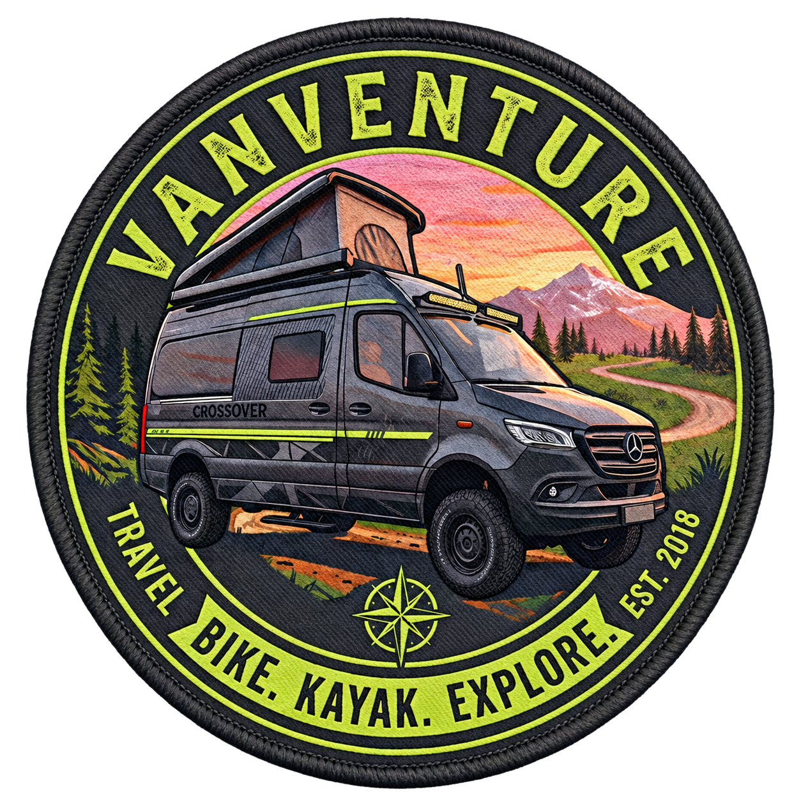

Norway
Fjorde, Gletscher, lange Straßen – und der Anfang von VanVenture.

VANVENTUREVAN · BIKE · KAYAK · EXPLORE
VanVenture ist unser Logbuch für echte Reisen, praxiserprobtes Setup und die Geschichten zwischen Start und Ankunft.
WOFÜR WIR LOSFAHREN
Wir teilen die Orte, die Umwege und das Wissen, das eine Reise leichter macht: vom Camp-Setup über die Bike-Linie bis zum letzten ruhigen Stellplatz.
REISEARCHIV
Alle VideosUNSER BASISLAGER
Unser HYMER Grand Canyon S CrossOver, Modelljahr 2025, verbindet den Mercedes-Benz Sprinter 419 CDI mit permanentem Allrad, einem autarken Energiesystem und einem Setup für Wege abseits der Straße.
Komplettes FahrzeugprofilFAHRZEUGPROFIL
Die Daten zeigen unser tatsächlich freigegebenes Setup – nicht eine Wunschliste.
Permanenter Allrad · 9G-TRONIC Automatik
2,06 m breit · 2,85 m hoch · 4,10 t zGG
Lithium · 95 W Solar · 1.600-VA-Wechselrichter
Frischwasser · 85 l Abwasser
CROSSOVER-SETUP
UNSER AUSBAU
FELDAUSRÜSTUNG
Keine Wunschliste. Nur was mitkommt.
NÄCHSTE KOORDINATEN
Sobald die nächste Route steht, teilen wir Ziel, Saison und Vorbereitung.
Orte, die nicht nur gespeichert, sondern Schritt für Schritt erreichbar werden.
DIE NÄCHSTE ETAPPE
Neue Videos, Reiseberichte und getestete Ausrüstung gibt es auf YouTube.
Kanal abonnieren